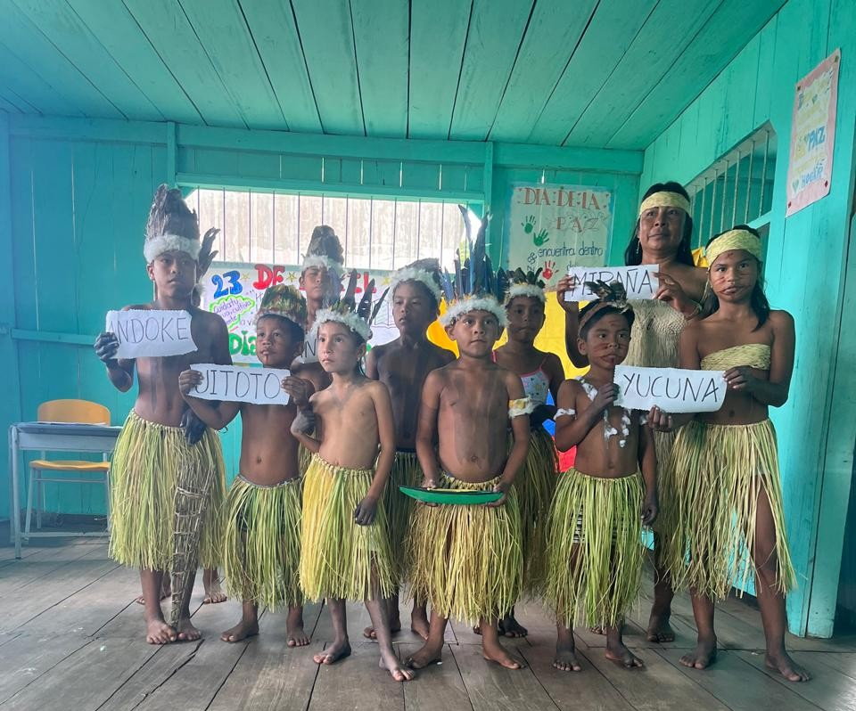
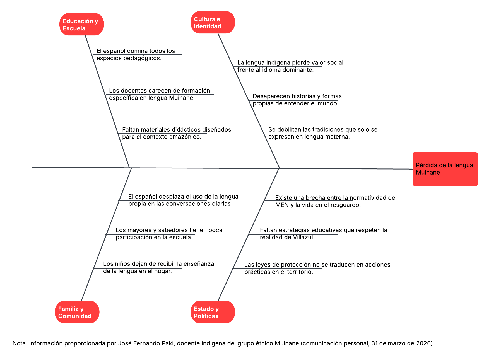
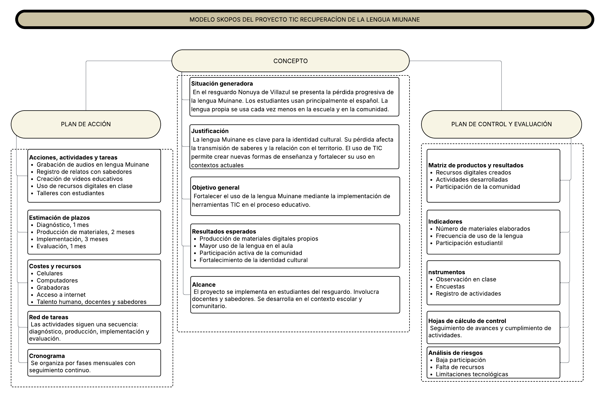
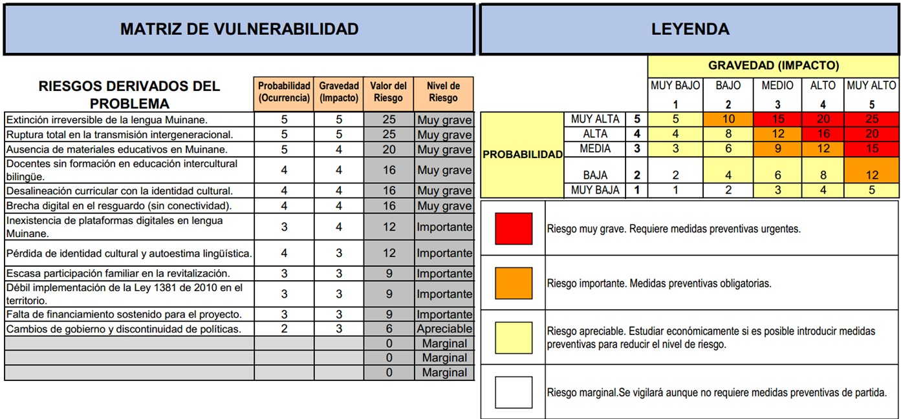
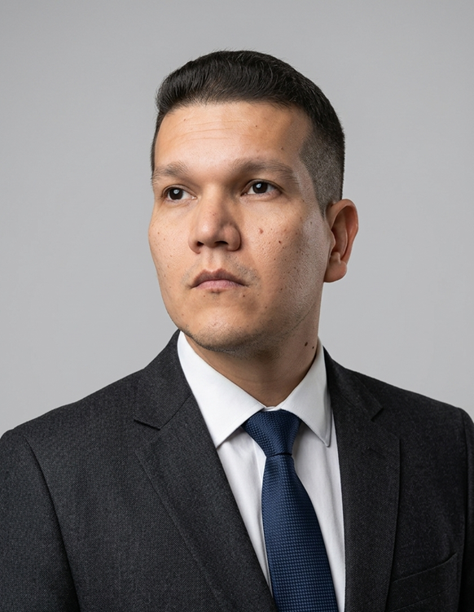
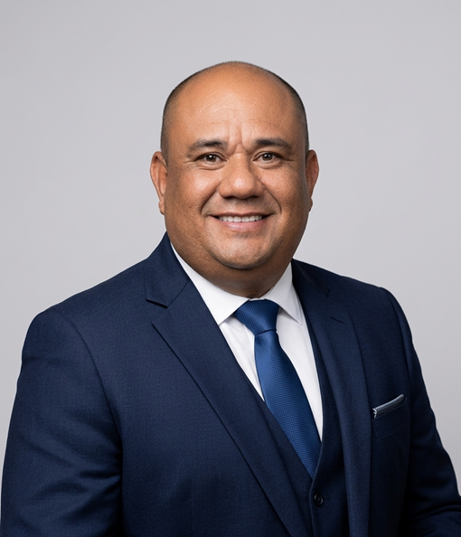

La Voz Muinane No Se Apaga
Un proyecto educativo mediado por TIC para recuperar, preservar y transmitir la lengua materna del pueblo Muinane a las nuevas generaciones.
Conocer el ProyectoEl Pueblo Muinane
Una comunidad amazónica cuya lengua y saber ancestral enfrentan el silencio generacional

Un idioma que carga siglos de conocimiento
El Muinane es una lengua amazónica hablada en los departamentos de Amazonas y Caquetá, Colombia. No es solo un sistema de comunicación: es el archivo vivo de una cosmología, una medicina y una forma de habitar el territorio que no existe en ningún otro idioma.
- La UNESCO clasifica al Muinane como lengua en situación de vulnerabilidad, con transmisión intergeneracional interrumpida en muchas familias.
- Los jóvenes de la comunidad crecen en entornos bilingües donde el español desplaza al Muinane como lengua cotidiana y de escolarización.
- Los portadores de saber, abuelos y sabedores del pueblo, son los últimos custodios de vocabularios, relatos y conocimientos que no tienen traducción posible.
Este proyecto parte de un principio claro: la tecnología no llega antes que la comunidad. Llega como respuesta a una necesidad que la comunidad ya definió, con mecanismos propios de gestión y con los sabedores Muinane como protagonistas del proceso, no como objetos de documentación.
Contexto Socioeconómico
Condiciones que justifican la urgencia de la intervención en el resguardo Nonuya de Villazul
Indicadores de vulnerabilidad
- Escolaridad: Solo el 5% de los jóvenes accede a educación superior. La tasa de analfabetismo en adultos mayores es del 40%.
- Economía: Basada en agricultura de subsistencia, pesca artesanal y artesanías. El 70% de las familias vive con menos de 1 salario mínimo mensual.
- Servicios: El resguardo no tiene acceso a internet de banda ancha. Solo el 15% de las viviendas cuenta con conexión intermitente vía satelital comunitaria.
- Salud: Alta incidencia de enfermedades prevenibles (desnutrición infantil, infecciones respiratorias) por lejanía de centros de salud.
Discriminación lingüística estructural
- El 80% de los jóvenes entre 12 y 18 años no usa el Muinane como lengua cotidiana. Lo entienden parcialmente pero no lo producen.
- Los docentes no bilingües representan el 75% de la planta educativa, lo que forza el uso del español en el aula.
- Los padres de familia indígenas (65%) han dejado de hablar Muinane a sus hijos por temor a que sean discriminados en la escuela o en el mercado laboral.
- No existe ningún material didáctico en Muinane en las escuelas del resguardo. Los niños aprenden a leer y escribir exclusivamente en español.
Fundamentación Teórico-Pedagógica
Principios que sustentan la innovación educativa intercultural y bilingüe
Constructivismo social
Basado en Vygotsky (1978) y Piaget (1970). El conocimiento se construye en la interacción con otros y con el entorno. Los sabedores Muinane actúan como mediadores del aprendizaje, y los estudiantes construyen significado a través de la documentación participativa y el diálogo intergeneracional.
Aprendizaje situado
Díaz-Barriga (2003) sostiene que el aprendizaje es más significativo cuando ocurre en contextos auténticos. Las actividades del proyecto se realizan en el territorio Muinane: la maloka, la chagra, el río. No se aprende la lengua en un aula vacía, sino en las prácticas cotidianas de la comunidad.
Educación Intercultural y Bilingüe (EIB)
Schmelkes (2006) y la CGEIB (2013) definen la EIB como un enfoque que respeta la identidad cultural del educando, enseña competencias para participar en la sociedad mayoritaria y promueve el diálogo respetuoso entre culturas. El proyecto integra el Muinane como lengua de instrucción y el español como segunda lengua, en condiciones de equidad.
Mediación TIC con soberanía comunitaria
La tecnología no es un fin en sí misma. Siguiendo a Pineda (2016), las TIC se integran como herramientas al servicio del proyecto educativo definido por la comunidad. Se priorizan soluciones offline, de bajo costo y con control comunitario de los datos.
¿Por qué este proyecto?
Tres razones que explican la urgencia de actuar ahora
La brecha generacional
Los jóvenes Muinane tienen acceso a tecnología pero no a contenido en su propia lengua. La brecha no es de conectividad: es de presencia digital del saber propio.
El tiempo es un factor
Cada año que pasa sin documentación participativa es un año de pérdida irreversible. Los portadores de saber mayores son el archivo vivo que este proyecto busca activar.
La tecnología como aliada
Usada con soberanía comunitaria, la tecnología puede preservar, difundir y revitalizar saberes. La comunidad decide qué se documenta, cómo y para quién.
Identificación del Problema
Análisis de causas de la pérdida de la lengua Muinane en el resguardo Nonuya de Villazul mediante el diagrama de Ishikawa
La identificación del problema se realizó mediante el diagrama de causa-efecto (Ishikawa), herramienta que permite organizar y clasificar sistemáticamente los factores que originan una situación problemática (Ponce Talancón, 2007). Su aplicación facilitó el análisis estructurado de las causas críticas asociadas a la pérdida de la lengua materna Muinane en el resguardo indígena Nonuya de Villazul, departamento del Amazonas. El diagnóstico se construyó a partir de información primaria aportada por el docente indígena José Fernando Paki, miembro del grupo étnico Muinane y conocedor directo de la realidad sociolingüística del resguardo (comunicación personal, 31 de marzo de 2026).
Según Pineda Acero (2016), un problema surge cuando existe una diferencia entre lo que se espera y lo que realmente ocurre. En este caso: la lengua Muinane debería transmitirse de generación en generación dentro del resguardo. Eso no está ocurriendo.
Diagrama de Ishikawa — Causas de la pérdida de la lengua Muinane

Causas identificadas desde fuentes académicas y primarias
El español domina la escuela, el comercio y la vida cotidiana del resguardo. La lengua indígena pierde valor social frente a la lengua dominante, proceso documentado por Fishman (1991) como la principal causa de extinción de lenguas minoritarias.
Existen pocos materiales educativos en Muinane. El currículo escolar opera principalmente en español, lo que excluye la lengua materna del espacio formal de aprendizaje donde los niños pasan la mayor parte de su tiempo.
La transmisión de la lengua de abuelos a nietos es cada vez menor. Los jóvenes migran a centros urbanos y pierden el contacto cotidiano con los portadores de saber. Sin ese contacto, la lengua deja de usarse antes de que los niños la adquieran.
Los jóvenes del resguardo perciben la lengua propia como un obstáculo para su integración en la economía y la sociedad dominante. La lengua indígena se asocia con atraso, no con identidad. Esa percepción, si no se interviene, hace imposible la revitalización.
El Muinane no existe en el espacio digital. No hay aplicaciones, contenido en redes sociales ni plataformas en esa lengua. Los jóvenes consumen tecnología exclusivamente en español, lo que refuerza el desplazamiento lingüístico en el espacio donde más tiempo pasan.
La Ley de Lenguas Nativas de 2010 reconoce y protege las lenguas indígenas, pero su aplicación en el resguardo Nonuya de Villazul es insuficiente. La norma existe, pero los recursos, la formación docente y los mecanismos de seguimiento no han llegado al territorio.
"Una lengua no desaparece de golpe. Se va silenciando poco a poco: primero en la escuela, luego en el mercado, después en el hogar. Cuando los niños dejan de escucharla de sus abuelos, el proceso ya está muy avanzado." — A partir de Fishman (1991) y UNESCO (2003).
Marco Legal y Documentos Rectores
Referentes normativos del Ministerio de Educación Nacional que fundamentan este proyecto educativo
Los documentos rectores del sistema educativo colombiano constituyen la base de este proyecto. No se limitan a ser normas: orientan el rumbo, guían las decisiones y aseguran que la propuesta responda a las necesidades del contexto. Según Barbosa y de Moura (2016), el MEN los agrupa bajo el concepto de "base institucional" del diseño educativo. Un proyecto que ignore estos marcos tiene menos posibilidades de ser viable e impactar dentro del sistema educativo colombiano (Pineda Acero, 2016).
Modelo SKOPOS — Estructura del Proyecto
El proyecto se estructura bajo el modelo SKOPOS (Barbosa y de Moura, 2016), que permite visualizar el concepto, el plan de acción y el sistema de control, facilitando la organización y ejecución de la propuesta educativa.

Leyes y Normativas Aplicables
Ley General de Educación. Define los fines y objetivos que deben guiar el proceso educativo colombiano. Establece que la educación debe responder a las necesidades del país y de sus comunidades, incluyendo las indígenas.
Regula la educación superior en Colombia. Define su organización, principios y objetivos. Establece la autonomía universitaria y busca garantizar la calidad y el acceso a este nivel educativo respondiendo a las necesidades sociales.
Código de Infancia y Adolescencia. Protege los derechos de los niños y adolescentes. Establece responsabilidades para la familia, la sociedad y el Estado, y promueve el respeto por la dignidad y la participación de los menores.
Política de Estado para el desarrollo integral de la primera infancia "De Cero a Siempre". Define acciones articuladas entre el Estado, la familia y la sociedad para garantizar atención, cuidado y educación de calidad desde los primeros años.
Ley de Lenguas Nativas. Garantiza el reconocimiento, protección y fortalecimiento de los derechos lingüísticos de los grupos étnicos. Es el principal respaldo legal de este proyecto para la preservación del Muinane.
Decreto Único Reglamentario del Sector Educación. Regula el uso pedagógico de las TIC, la inclusión y equidad, y los lineamientos curriculares. Garantiza que la comunidad pueda fortalecer su identidad dentro del sistema educativo.
Plan Nacional Decenal de Educación 2016–2026
El PNDE define los grandes desafíos del sistema educativo. Este proyecto se conecta con tres de sus líneas prioritarias: uso pedagógico de las TIC, inclusión y equidad, y fortalecimiento de la educación intercultural. Los fines de la educación definidos en las normas vigentes son obligatorios para todos los proyectos educativos.
Proyecto Educativo Institucional (PEI)
El PEI es la carta de navegación de cada institución educativa (Álvarez, 2002). Antes de formular cualquier proyecto, hay que revisarlo. La propuesta Muinane se articula con los principios de identidad cultural, pertinencia territorial y educación propia que los resguardos definen en sus proyectos educativos comunitarios.
Beneficiarios Directos e Indirectos
Cuantificación de la población atendida por el proyecto
120
Estudiantes directos
Género: 65 niñas, 55 niños
Grados: Transición a 5° de primaria
Edades: 5 a 14 años
8
Docentes
De ellos: 3 docentes bilingües (Muinane-español)
Formación: 5 normalistas, 3 licenciados
Vinculación: Todos son indígenas o residentes de larga data en el resguardo
10
Sabedores mayores
Rango etario: 55 a 82 años
Roles: 8 hombres, 2 mujeres. Custodios del conocimiento oral, medicinal y ceremonial.
Padres de familia
80 familias del resguardo Nonuya de Villazul participan activamente en actividades de transmisión cultural, talleres de sensibilización y apoyo logístico (alimentación, transporte, permisos).
Beneficiarios indirectos
Toda la comunidad del resguardo (aproximadamente 350 personas), más otras comunidades Muinane de Amazonas y Caquetá que podrán acceder a los materiales digitales producidos, y organizaciones indígenas que trabajan en revitalización lingüística a nivel nacional.
Objetivos del Proyecto
Objetivo General
Fortalecer la transmisión y uso de la lengua materna Muinane en el resguardo Nonuya de Villazul, Amazonas, mediante el diseño e implementación de una estrategia educativa mediada por TIC que integre los saberes de los portadores de conocimiento ancestral con recursos digitales producidos y controlados por la propia comunidad, contribuyendo a la preservación de su identidad cultural y a la revitalización lingüística intergeneracional.
Objetivos Específicos con Metas Medibles
Cada objetivo tiene una unidad de medida y un plazo de cumplimiento
Archivo oral Muinane
Meta: Documentar 50 relatos orales (cuentos, cantos, mitos, procedimientos medicinales) en lengua Muinane, con audio y video, en los primeros 6 meses del proyecto, contando con el consentimiento previo de cada sabedor y su familia.
Material educativo bilingüe
Meta: Producir 3 cartillas bilingües (Muinane-español) de 20 páginas cada una, sobre temas definidos por la comunidad (vocabulario básico, plantas medicinales, normas de convivencia), y distribuir 120 ejemplares a los estudiantes antes de diciembre de 2026.
Red intergeneracional
Meta: Conectar a 30 jóvenes con 10 sabedores mediante encuentros quincenales (2 horas) durante 9 meses, registrando al menos 20 sesiones de diálogo y transmisión oral que queden archivadas en formato digital accesible offline.
App de lengua Muinane
Meta: Desarrollar una aplicación móvil que contenga 500 entradas de vocabulario con pronunciación en audio, 10 cuentos narrados y un juego interactivo de preguntas. La app debe estar funcional y descargable (sin necesidad de internet) en un plazo de 12 meses.
Soberanía digital comunitaria
Meta: Instalar un servidor comunitario offline (capacidad mínima 2TB) en la escuela del resguardo antes del mes 9, donde se alojen todos los archivos y la app, con protocolos de respaldo trimestral y un comité de 3 miembros de la comunidad encargado de la gestión de permisos de acceso.
Formación de docentes locales
Meta: Capacitar a 8 docentes y 5 jóvenes de la comunidad en producción de contenido digital (grabación, edición de audio/video, uso de la app) mediante un taller de 40 horas distribuidas en 4 meses. Al finalizar, cada docente debe haber producido al menos 2 recursos digitales en Muinane.
Metodología Detallada
Estrategias, actividades, recursos y tiempos para cada objetivo
Estrategia general: Investigación-acción participativa
Se sigue el ciclo: diagnóstico participativo → diseño conjunto → pilotaje → evaluación y ajuste → implementación ampliada. Todos los pasos se acuerdan en asamblea comunitaria.
Archivo oral
- Técnica: Círculos de la palabra con grabación audiovisual.
- Frecuencia: 2 sesiones semanales de 2 horas.
- Herramientas: Grabadora Zoom H1n, cámara réflex básica, trípode.
- Facilitador: Sabedor mayor + joven que opera la cámara (aprendizaje peer-to-peer).
- Registro: Cada sesión produce un archivo de audio/video con metadatos (fecha, narrador, tema, consentimiento firmado).
Materiales bilingües
- Técnica: Talleres de codiseño con maestros, sabedores y diseñador gráfico.
- Pasos: Selección de vocabulario → transcripción y traducción colectiva → ilustración participativa (niños dibujan) → maquetación → impresión.
- Recursos: Computadora portátil, impresora láser, papel bond, materiales de dibujo.
App y plataforma digital
- Técnica: Desarrollo iterativo con pruebas de usabilidad en la comunidad.
- Actores: Ingeniero de software (James Díaz) + jóvenes formados como beta testers.
- Infraestructura: Servidor local con Raspberry Pi 4 o mini PC, panel de administración simple.
- Contenido: Los audios y videos producidos se integran a la app mediante scripts automáticos.
Encuentros intergeneracionales
- Técnica: Diálogo estructurado con preguntas guía (historia de vida, significado de palabras, relatos del territorio).
- Lugar: Maloka comunitaria o casa del sabedor.
- Rol del docente: Toma notas, graba, modera el respeto de turnos.
- Producto: Al final de cada encuentro, se genera una "cápsula de saber" (audio + transcripción bilingüe).
Evaluación del Proyecto
Criterios, instrumentos, frecuencias y responsables
| Criterio de éxito | Indicador | Instrumento | Frecuencia | Responsable |
|---|---|---|---|---|
| Documentación oral | N° de relatos grabados (meta: 50) | Lista de verificación, bitácora de archivos | Mensual | Luis González |
| Uso de materiales en el aula | % de docentes que usan cartillas (meta: 100%) | Observación de clase, encuesta a estudiantes | Trimestral | Fernando Paki |
| Frecuencia de uso de la app | N° de descargas e interacciones registradas en el servidor local | Registro automático de la app (anónimo) | Quincenal | James Díaz |
| Participación de sabedores | Asistencia ≥ 80% a los círculos de la palabra | Lista de asistencia firmada | Semanal | Docente del grado |
| Autoestima lingüística | Cambio en percepción sobre la lengua (pre y post prueba) | Cuestionario adaptado a niños (escala de Likert visual) | Inicio y final del proyecto | Equipo evaluador externo |
| Sostenibilidad técnica | Servidor funcionando sin interrupciones > 48h | Monitoreo de uptime, respaldos realizados | Diario | Comité digital comunitario |
Comunicación de resultados: Informes trimestrales a la asamblea comunitaria, boletín digital para aliados, presentación en encuentros de educación intercultural.
Impacto Esperado y Sostenibilidad
Aprendizajes, transformaciones y estrategias de continuidad
Impactos esperados
- Lingüístico: Al menos 100 palabras nuevas en el vocabulario activo de los niños; 20 frases cortas en Muinane de uso cotidiano.
- Cultural: Revaloración del conocimiento de los sabedores por parte de los jóvenes; los materiales digitales se usan como orgullo identitario en la escuela.
- Comunitario: Mayor cohesión intergeneracional; los padres recuperan la confianza en transmitir la lengua en el hogar.
- Digital: La comunidad opera su propio servidor y produce contenido sin depender de agentes externos.
Estrategias de sostenibilidad
- Curricularización: Los materiales producidos se incorporan al Plan de Área de Lengua Castellana y al Proyecto Educativo Institucional, garantizando su uso más allá del financiamiento.
- Capacidades locales: Los 8 docentes y 5 jóvenes formados continúan como formadores de nuevas generaciones.
- Red de replicación: Se firman acuerdos con otras 3 comunidades Muinane de Caquetá para compartir la metodología y la app.
- Gestión de recursos: El comité comunitario postulará el proyecto a convocatorias del Ministerio de Cultura (Programa de Estímulos) y fondos de cooperación internacional (UNESCO, Survival International).
La lengua Muinane tiene algo que ningún archivo puede reemplazar
Tiene hablantes. Mientras haya personas que la usen, transmitan y enseñen, la lengua vive. Este proyecto existe para que esas personas tengan las herramientas digitales que necesitan, en sus propios términos.
Únete al proyectoActividades del Proyecto
Las acciones concretas que se desarrollan con la comunidad Muinane
- Todas
- Digital
- Comunidad
- Educación
- Archivo

{kind=link}
{kind=link}
{kind=link}
{kind=link}
{kind=link}
{kind=link}
{kind=link}
{kind=link}
{kind=link}
{kind=link}
{kind=link}
Cronograma de Actividades
Plan de ejecución a 18 meses — Proyecto Muinane, Resguardo Nonuya de Villazul, Amazonas (2026–2027)
El cronograma se organiza en cuatro fases de ejecución progresiva, siguiendo la estructura de la Teoría de Proyectos (Álvarez, 1997; UNESCO, 1993). Incluye tres reuniones comunitarias obligatorias que garantizan la participación activa de la comunidad Muinane en cada etapa decisiva del proceso.
Tres Reuniones Comunitarias Clave
Presentación oficial del proyecto ante la comunidad, autoridades del resguardo y líderes tradicionales. Se explican los objetivos, la metodología, los principios de soberanía digital y los protocolos de consentimiento libre, previo e informado. La comunidad aprueba o solicita ajustes antes de iniciar cualquier actividad.
La comunidad selecciona colectivamente a los sabedores mayores que participarán en la documentación oral, los docentes locales que liderarán la producción de contenido digital y los jóvenes que integrarán la red intergeneracional. La selección es comunitaria, no externa.
Presentación y entrega formal de todos los productos del proyecto a la comunidad: archivo oral, materiales bilingües, aplicación móvil, diccionario digital y cartillas pedagógicas. La comunidad valora los resultados y define las condiciones de uso, acceso y continuidad.
Plan de Ejecución — 18 Meses
- 🤝 Reunión 1: Socialización del proyecto
- Firma del acta de consentimiento comunitario
- Revisión y ajuste del plan con la comunidad
- Diagnóstico de conectividad y equipamiento
- Talleres de sensibilización con jóvenes y familias
- Mapeo de sabedores mayores disponibles
- Configuración de infraestructura tecnológica básica
- Definición de protocolos de grabación
- 🤝 Reunión 2: Selección de sabedores y equipo
- Asignación formal de roles y responsabilidades
- Formación inicial en uso de herramientas digitales
- Inicio del registro fotográfico del territorio
- Inicio de círculos de saberes con portadores mayores
- Grabación de relatos, cantos y vocabularios en Muinane
- Meta: 20 sesiones de grabación documentadas
- Transcripción y validación comunitaria de contenidos
- Documentación de medicina ancestral y conocimiento del territorio
- Inicio de cartografía social digital
- Meta: 200 entradas léxicas para el diccionario Muinane
- Formación de docentes locales como productores de contenido
- Producción de primeras cartillas bilingües Muinane–Español
- Desarrollo del prototipo de aplicación móvil
- Meta: 3 cartillas pedagógicas diseñadas
- Prueba piloto del archivo oral con grupos de jóvenes
- Implementación de materiales en escuela comunitaria
- Lanzamiento de la red digital intergeneracional
- Meta: 30 jóvenes activos en la red Muinane
- Primera evaluación de impacto con los docentes
- Publicación del canal YouTube en lengua Muinane
- Versión beta de la app móvil disponible para prueba
- Meta: 10 videos producidos por la comunidad
- Ajustes al diccionario digital con retroalimentación comunitaria
- Ajustes finales a todos los materiales según evaluación
- Preparación del informe de sistematización
- Meta: 50 relatos orales archivados y validados
- Revisión final de la app móvil con sabedores
- Evaluación final con la comunidad: encuestas y grupos focales
- Sistematización de aprendizajes del proceso
- Verificación del cumplimiento de todas las metas
- Preparación del evento de entrega comunitaria
- Publicación del informe final de experiencia intercultural
- Transferencia de archivos a servidores comunitarios
- Registro legal de los materiales como propiedad colectiva
- Difusión en redes y medios de comunicación regionales
- 🤝 Reunión 3: Entrega formal del proyecto
- Presentación pública de todos los productos a la comunidad
- Definición comunitaria del plan de continuidad
- Acta de recepción y acuerdos de sostenibilidad futura
Metas Globales al Finalizar los 18 Meses
Financiamiento y Beneficiarios
Estructura de recursos, beneficiarios directos e indirectos del proyecto — Resguardo Nonuya de Villazul, Amazonas
Beneficiarios del Proyecto
Beneficiarios Directos
Los beneficiarios directos participan activamente en la producción de contenido y reciben formación en herramientas digitales. Los sabedores son reconocidos formalmente como productores de conocimiento, no como fuentes pasivas.
Beneficiarios Indirectos
- Toda la comunidad del Resguardo Nonuya de Villazul (aproximadamente 400 personas) que accede a los materiales producidos.
- Estudiantes de la escuela comunitaria que usan las cartillas bilingües en clase.
- Familias Muinane en contexto urbano que reconectan con la lengua a través de la app y el canal YouTube.
- Otras comunidades indígenas amazónicas que pueden replicar el modelo de soberanía digital.
Recursos y Fuentes de Financiación
Recursos Humanos
- 2 ingenieros de sistemas (equipo técnico)
- 1 docente indígena Muinane (enlace comunitario)
- 8–12 sabedores mayores (portadores de saber)
- 3–5 docentes locales en formación
- Apoyo voluntario de jóvenes de la comunidad
Recursos Materiales
- Equipos de grabación de audio y video
- Tablets y smartphones para producción de contenido
- Servidor local para archivo comunitario offline
- Materiales de impresión para cartillas bilingües
- Energía solar para zonas sin red eléctrica estable
Fuentes de Financiación Exploradas
- Ministerio de Educación Nacional — Convocatorias de innovación educativa
- MINTIC — Programas de inclusión digital en territorios étnicos
- Cooperación internacional (UNESCO, OEI, Fundación Ford)
- UNIMINUTO — Proyección social universitaria
- Fondo Indígena — Cooperación técnica amazónica
Criterios de Evaluación del Proyecto
Se realiza al finalizar cada fase mediante reuniones de seguimiento con el equipo y representantes de la comunidad. Se verifican los avances frente a las metas cuantitativas y se aplican ajustes según los resultados obtenidos.
Al finalizar el proyecto se aplican encuestas a jóvenes, sabedores y docentes para medir cambios en el uso de la lengua Muinane, el orgullo identitario y la apropiación de herramientas digitales propias.
Número de relatos archivados, entradas del diccionario, cartillas producidas, videos publicados, jóvenes activos en la red digital y descargas de la aplicación móvil.
Nivel de apropiación comunitaria de los materiales, percepción de los sabedores sobre el respeto a sus protocolos culturales y grado de continuidad que la comunidad define para el proyecto.
Factores Restrictivos y Riesgos
Matriz de vulnerabilidad del proyecto de fortalecimiento de la lengua Muinane mediante TIC — Resguardo Nonuya de Villazul, Amazonas
La formulación de un proyecto educativo mediado por tecnología no comienza con la solución, sino con la comprensión profunda del problema. Reconocer los riesgos que pueden afectar su desarrollo es tan importante como definir sus objetivos, puesto que, como señalan Galarza y Almuiñas (2015), la gestión de riesgos en la planificación educativa permite anticipar situaciones críticas y establecer mecanismos de respuesta antes de que estas comprometan los resultados esperados.
El presente análisis parte de un estudio DOFA enfocado en las Debilidades y Amenazas derivadas de la situación problémica central: la pérdida de la lengua indígena Muinane en el resguardo Nonuya de Villazul. Ese diagnóstico permitió identificar doce riesgos concretos, valorados según su probabilidad de ocurrencia e impacto sobre el proyecto. Para la representación visual se utilizó el modelo de mapa de calor propuesto por Zepeda (2019).

Riesgos Muy Graves (valor 25)
Dos riesgos alcanzaron el valor máximo posible en la matriz, con probabilidad 5 e impacto 5:
- Extinción irreversible de la lengua Muinane. Como advierte la UNESCO (2003), una lengua que deja de transmitirse a las nuevas generaciones entra en un proceso de desaparición que, de no intervenirse a tiempo, se vuelve irreversible.
- Ruptura total en la transmisión intergeneracional. La interrupción del vínculo entre sabedores mayores y jóvenes elimina el único canal que ninguna plataforma digital puede reemplazar.
Riesgos Importantes (valores 12–16)
Cuatro riesgos actúan como causas de segundo orden que sostienen y profundizan la crisis:
- Ausencia de materiales educativos en lengua propia.
- Falta de formación docente en educación intercultural bilingüe.
- Desalineación del currículo escolar con la identidad Muinane.
- Brecha digital en el resguardo. Pineda (2016) señala que la integración efectiva de las TIC requiere condiciones pedagógicas, curriculares e institucionales que la sostengan.
Riesgos Apreciables
Cinco riesgos completan el panorama con una dimensión social, normativa y económica que suele subestimarse en la formulación de proyectos. Galarza y Almuiñas (2015) advierten que su acumulación progresiva puede derivar en obstáculos tan significativos como los de mayor urgencia:
La pérdida de la lengua Muinane no es el resultado de un solo factor. Es el producto acumulado de debilidades internas no atendidas y de amenazas externas que ejercen presión constante. La visualización de estos riesgos a través del mapa de calor evidencia que la mayor concentración de criticidad se ubica en los factores lingüísticos y pedagógicos, lo que orienta directamente las prioridades de intervención del proyecto.
Preguntas Frecuentes
Respuestas a las inquietudes más comunes sobre el proyecto y el pueblo Muinane.
1. ¿Qué es la lengua Muinane y dónde se habla?
El Muinane es una lengua amazónica perteneciente a la familia lingüística Bora, hablada principalmente en los departamentos de Amazonas y Caquetá, Colombia. Tiene aproximadamente 3.000 hablantes activos y está clasificada por la UNESCO como lengua vulnerable.
2. ¿Por qué usar tecnología y no métodos de enseñanza tradicionales?
La tecnología complementa los métodos orales. Sirve para extender el aprendizaje en el tiempo y el espacio, conectar a jóvenes que migraron a ciudades con sus comunidades, y preservar grabaciones de sabedores mayores.
3. ¿La comunidad Muinane controla los contenidos que se producen?
Sí. Todos los archivos, grabaciones y materiales son propiedad de la comunidad. Se utilizan protocolos de consentimiento libre, previo e informado.
4. ¿Cómo puede participar una persona o institución externa?
Como aliado técnico o financiador, siempre bajo los protocolos de la comunidad. No se acepta extracción de datos sin devolución comunitaria.
5. ¿Qué pasa con los saberes que no se pueden digitalizar?
La comunidad decide qué se documenta y qué no. Algunos conocimientos tienen restricciones de transmisión. El proyecto respeta esas decisiones.
Equipo del Proyecto
Grupo 5 — Docentes, investigadores y miembros de la comunidad Muinane

Luis Alejandro González Soto
Ing. Sistemas — ID: 001142837Lidera el proceso de documentación de la lengua Muinane con los sabedores.

James Wilmer Díaz Vargas
Ing. Sistemas e Informática — ID: 001136752Diseña y mantiene la infraestructura tecnológica del proyecto.
Fernando José Paki
Docente Indígena MuinaneColaborador del diseño de experiencias de aprendizaje situado y fuente primaria del proyecto.